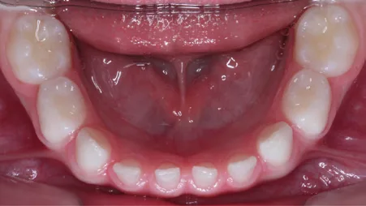

نسخه استخراجشده؛ ترجمه یا تأیید علمی انجام نشده است. وضعیت: captured
برخلاف تصور والدین، فاصله بین دندانهای شیری مطلوب است — چون دندانهای دائمی بزرگترند و به فضا نیاز دارند.
دو نوع فضا:
فضاهای تکاملی: فاصلههای پراکنده در سراسر قوس.
فضاهای پریمیت: فاصلههای ثابت و مشخص که در بیشتر قوسهای فاصلهدار دیده میشوند:
در فک بالا: مزیال کانین (بین ثنایای جانبی و کانین)
در فک پایین: دیستال کانین (بین کانین و مولر اول)
پیامد بالینی: دندانی شیریِ کاملاً بدون فاصله و بههمچسبیده، پیشبینیکنندهی ازدحام در دندانی دائمی است. این را باید همان موقع به والد گفت.

مجموع عرض کانین + مولر اول + مولر دوم شیری از مجموع عرض جانشینهایشان (کانین + پرمولر اول + پرمولر دوم دائمی) بیشتر است. این مازاد را فضای لیوی مینامند.
در فک پایین: حدود ۱٫۷ میلیمتر در هر سمت
در فک بالا: حدود ۰٫۹ میلیمتر در هر سمت
یعنی فضای لیوی در فک پایین تقریباً دو برابر فک بالاست.
به چه درد میخورد؟ با افتادن مولر دوم شیری، مولر اول دائمی به جلو حرکت میکند و این فضا را مصرف میکند — به این حرکت مزیالی دیررس میگویند و همان چیزی است که رابطهی مولری را به کلاس یک میرساند.
هشدار: اگر مولر دوم شیری زودهنگام از دست برود، این سرمایه بدون برنامه خرج میشود و فضا برای پرمولر کم میآید.